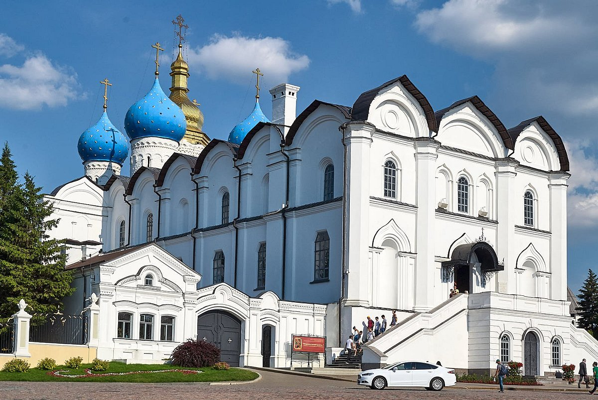
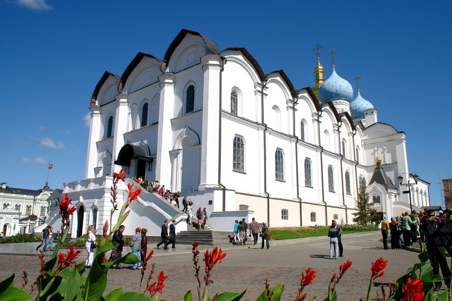
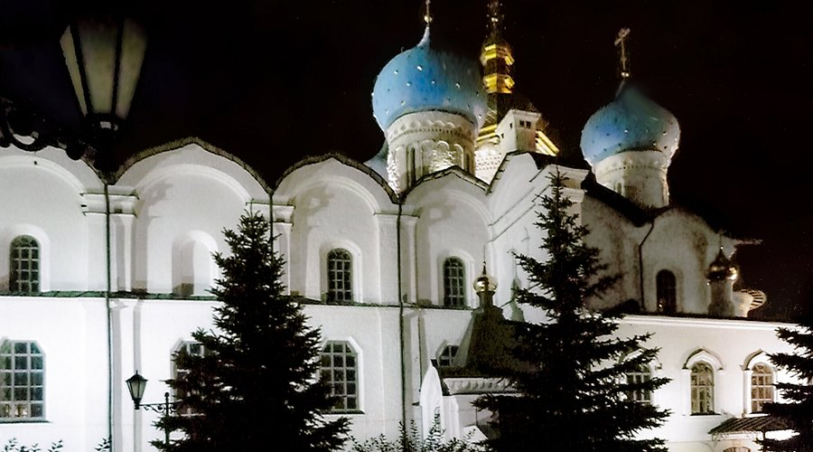
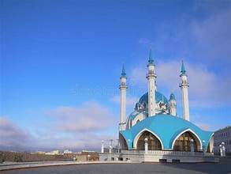
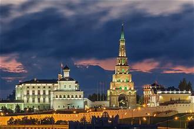

The Kazan Kremlin is a historic fortified complex in Kazan, Russia, located where the Volga and Kazanka Rivers meet. This UNESCO World Heritage Site exemplifies the blend of Russia’s Tatar and Russian cultural influences through its architecture, faith traditions, and continuous political role as the seat of the Republic of Tatarstan’s government.
The site originated as a Bulgar fortress around the 10th century and evolved through the periods of Volga Bulgaria, the Golden Horde, and the Kazan Khanate. After Ivan the Terrible captured Kazan in 1552, the Kremlin was rebuilt in white limestone by architects from Pskov. It became the administrative center of Russia’s expanding Volga frontier and later of the Tatar Autonomous Republic. Continuous restoration and museumification projects have preserved its layered architectural heritage.
Inside the walled citadel stand monuments symbolizing religious coexistence. The Kul Sharif Mosque, completed in 2005, revives the principal mosque lost in the 16th century and represents modern Tatar Islamic culture. Nearby, the Annunciation Cathedral, built in 1562, is the oldest surviving Orthodox church in the city. The leaning Söyembikä Tower, a brick landmark dating from the 17th–18th centuries, is steeped in local legend about the last Tatar queen. Together with the Governor’s Palace and surrounding walls and towers, they form a harmonious ensemble of Tatar and Russian styles.
The Kremlin remains a functioning governmental and cultural center housing several museums, including those of Islamic Culture and Natural History. It hosts events such as the “Music of Faith” festival, symbolizing the peaceful coexistence of Islam and Christianity. Visitors can enter the grounds freely, explore museums and viewpoints, and experience evening illuminations that highlight the fortress’s white-stone silhouette.


